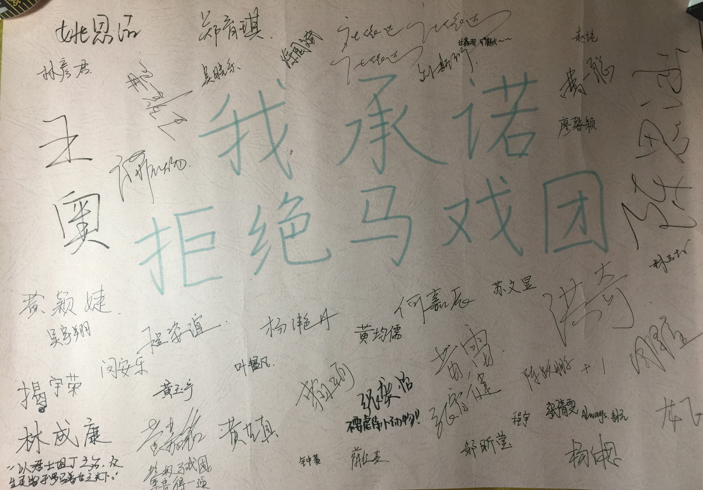
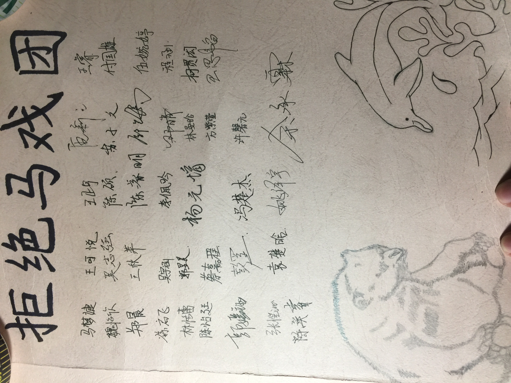
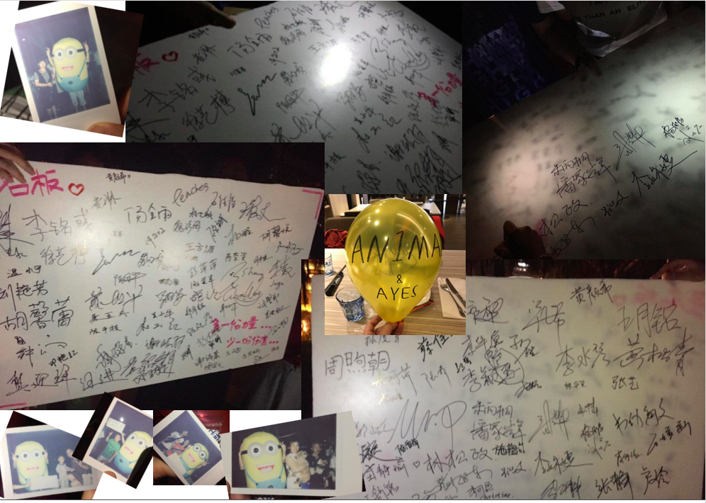

动物保护协会
Overview
我认为动物应该道德对待.
我不是一个极端的活动家，我的工作重点是抵制动物杂技。 我于2016年当选为学校动物保护协会会长。然后，我带领一支由15名学生组成的团队发起了"Not Born to Perform"的活动，以阻止厦门的动物杂技。
在整个活动中，我组织了慈善义卖和课堂演讲。 我们与当地政府代表争论停止到当地动物马戏团的学校春秋游，最后我们同时在厦门的5个不同公共区域举办慈善表演，有超过120名学生志愿者参与，捐赠所有获得的善款给PETA香港。
这是我们的故事：
|  |
| "I promise I will never visit animal circuses." |
{kind=link}
第1阶段：在课堂上
我坚信人们的快乐不应该基于动物的痛苦。 因此，我从不喜欢动物杂技的想法。 所以当我了解当地政府决定投资约1亿人民币（1500万美元）建造世界上最大的动物马戏团“厦门灵玲国际马戏”时，我感到非常不舒服。
该决定已由政府做出。 由于示威和上诉不是我所在城市的选择，我专注于劝阻公众参观。 而我最容易接触到一群人，就是我的同学。
所以，我写了一篇演讲，并在APA教我的队友如何演讲呈献。 然后我们与学校领导交谈，并在每个教室展示我们的演讲。 最后，我们收到了100多名学生的签名，他们发誓永远不会访问动物马戏团。
|  |
| Signatures from students |
{kind=link}
第二阶段：在校园里
在我们最初的竞选活动后几个月，我们当地政府的教育部门决定将灵灵马戏团作为许多公立学校学校旅行的目的地。
说我们不开心将是轻描淡写。我们很生气。
我将我的团队分成两组。一组专注于联系学校和政府官员，试图改变目的地。但我们知道，由于当地政府是马戏团的投资者之一，这件事成功机会很小。另一组则专注于校园范围的慈善销售，以提高动物保护意识。
我们设计了许多商品，并在我们的校园慈善拍卖会上出售。然后我们再次回到教室，提出我们的想法并劝阻学生参与。但是由于我们在高中的3年里只有2次学校旅行，所以很难劝阻学生。因此，我改变了演讲方式，从“拒绝马戏团”到“我最后一次去马戏团”的演讲。我们让学生思考如果他们是动物他们感觉如何，并要求他们做这是动物马戏团的第一次也是最后一次。
{kind=link}
{kind=link}
{kind=link}
第3阶段：社会
可悲的是，我们没有设法改变学校旅行的目的地。许多人，包括我自己，最终都去了马戏团。这应该是我们活动的结束，但是，正如您可能已经知道的那样，放弃对我来说永远不是一个选择。我想提高更多人的意识。
在此期间，我还是2017年厦门中学生精英峰会的主要组织者之一。我非常擅长夸组织合作。因此，我想激励峰会的参与者帮助我们开展活动。
在峰会期间，我给每个团队50元人民币（7.4美元）作为他们的初始资金。每个团队有3天的时间来制定可执行计划，以倡导拒绝动物马戏团。他们会在第四天实施他们的计划。当然，参与是自愿的。
这就像一个小实验，因为我不知道他们可以在3天内出现什么，甚至会有多少人出现。但事实证明这是一次巨大的成功。活动当天，约120名学生作为组织者参加了我们的活动。我们同时在两个购物区（中山路中山路，沙坡围沙坡尾），一个购物中心（SM），一个公园（五一广场五一广场）和我们的学校举办慈善活动和慈善活动。
最后，我们教育了许多行人，并收到了500多个签名。我们在四小时内筹集了约3600元人民币。而整个活动的预算仅为550元人民币。
 |
 |
{kind=link}
{kind=link}
{kind=link}
{kind=link}
{kind=link}